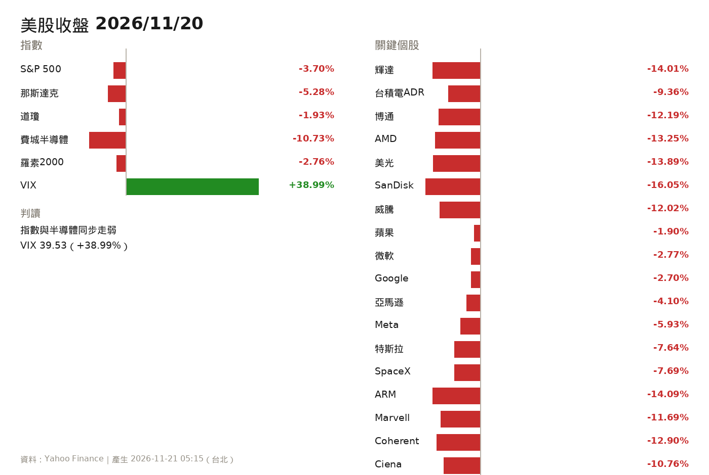
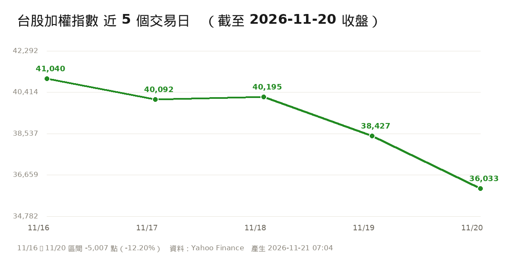
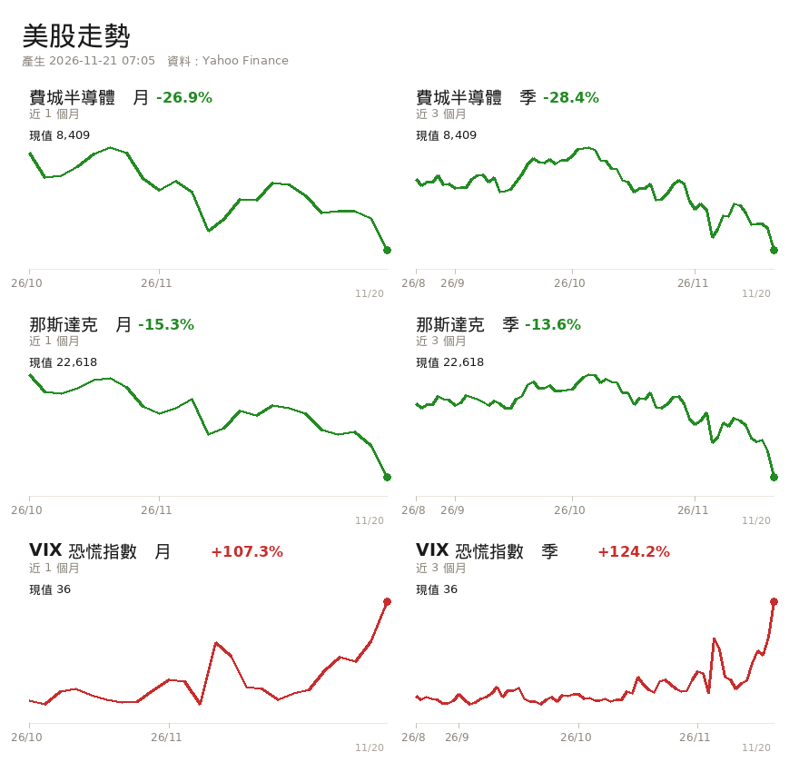
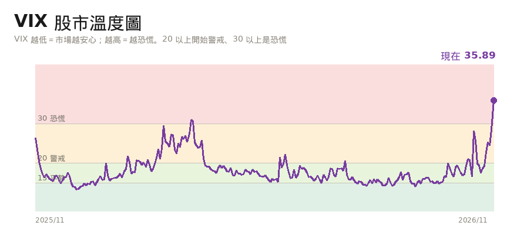
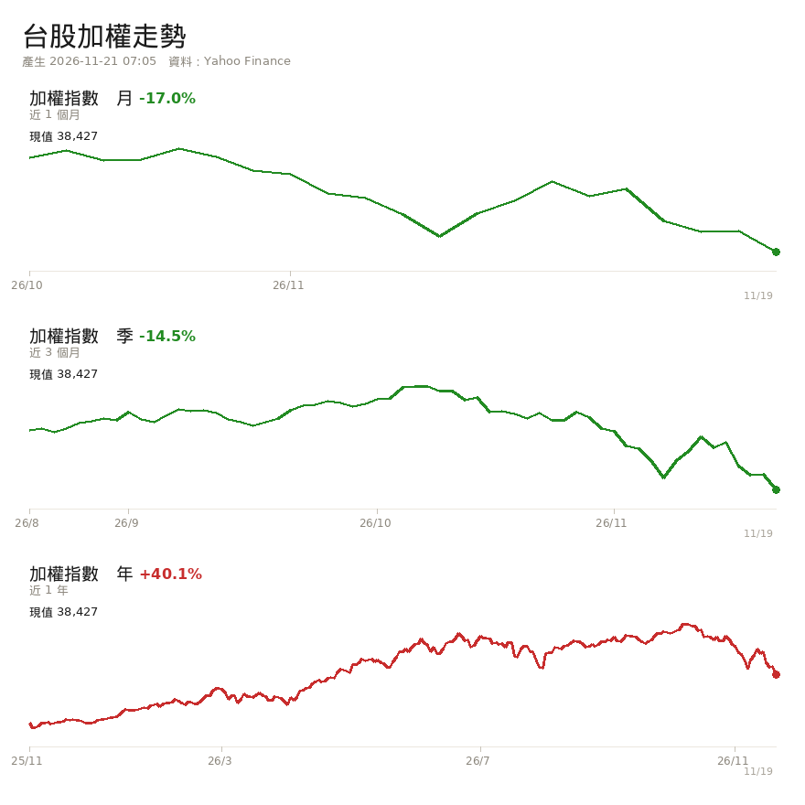

2026-11-21 投資日報2026-11-21 07:10
重點提醒｜Emmy（持續中）
來源：
財經頻道/Emmy追劇時間/Emmy重點提醒追蹤.md。未解除就會每天出現；判定解除當天標「過期」，隔天起不再列出。
- E1 輝達 NVDA／黃仁勳 真正風險不是技術洩密，是「走私晶片＋長期遊說晶片禁令」的國安問題。已持續 9 天。⬆️ 惡化（股價崩）：今日仍無新貼文（最新仍是 11/19「董事會不讓黃仁勳復職」那則）；但 NVDA 11/20 收 125.53（-14.01%），市場把「CEO 未定＋國安調查」直接反映在價格，不是反映在貼文。解除條件：正式（非臨時）新任 CEO 定案並公開承諾對台供應鏈與產品路線不變，且財報與後續國會簡報後無新增出口管制。
- E2 台股／美股大盤 民主黨期中選舉大勝 → AI 資料中心與科技業監管收緊的恐慌，是 11/05-11/06 崩盤主因。已持續 13 天。⬆️ 惡化（市場面）：政策面無新進度（BIS 132 頁新規照舊生效、川習普會談無 AI 晶片協議），但 11/20 費半 -10.73%、那斯達克 -5.28%，恐慌已由「監管預期」轉為「全面去槓桿」。解除條件：具體監管法案送進國會並過關，或政策明確轉向寬鬆。
- E3 台股／美股大盤 「熊市要來了嗎、該獲利了結嗎」——她事前提示了這一波下殺。已持續 20 天。⬆️ 惡化（連 2 日破底）：11/20 加權 -2,393.60 點（-6.23%）收 36,033.29，跌破 11/6 前低 37,837，史上第 3 大收盤跌點；成交 9,353 億；三大法人 -509.41 億（外資 -95.11、自營 -340.83、投信 -73.47）；365 檔跌停／1,509 檔下跌；融資 4,352.27 億（單日 -491.41 億）；櫃買 263.31（-7.72%）；週線 -7,641.83 點（-17.5%），1990 年以來最慘。解除條件：指數站回季線且外資轉為連續買超。
- E4 油價／布蘭特原油 中東戰火推升油價 → 通膨壓力 → 股市下跌。已持續 23 天。⬇️ 緩解（首次跌破 90）：布蘭特 11/20 收 89.87（-2.29%）、WTI 83.62（+0.49%），價格條件已達；但中東情勢無降溫證據，且油價與股市同日下跌，代表是「需求走弱／去槓桿」不是「風險解除」。解除條件：布蘭特回落至 90 美元以下且中東衝突降溫。
- E5 記憶體族群／8299 群聯 大摩一次降 6 檔記憶體、目標價腰斬，群聯 2,588→1,357 降為「劣於大盤」；理由是 2028 供需恢復平衡＋美國資料中心約兩成產能延後到 2029。已持續 10 天。⬆️ 惡化（跌破外資目標價）：8299 11/20 收 1,320（-135、-9.28%），已低於大摩目標 1,357（折價 2.7%）；同日美光 -13.89%、SanDisk -16.05%，記憶體是美股最弱族群。解除條件：NAND 現貨報價重新轉強且外資對群聯轉為買超，或大摩回補評等。
- E7 AI 硬體成本／毛利率見頂 輝達 Q4 毛利率指引 71~72%，低於本季 74.8%；採購承諾大幅增加，成本正往上游擠。已持續 3 天。➡️ 未變（口徑待核）：Q4 毛利率指引 71~72%、本季 74.8% 已確認；採購承諾仍有兩版本（經濟日報 3,660→5,180 億／宏爺與本檔 2,790→3,900 億），待 10-Q 原文核對。解除條件：輝達毛利率回升至 74% 以上且採購承諾增速放緩，或記憶體現貨價格連續 2 個月回落。
- E8 跨資產同步下跌／流動性緊縮 股、油、金同一天一起跌，代表「保證金追繳、到處變現」，不是資金輪動。今天提出。🆕 新增：11/20 同日 費半 -10.73%、布蘭特 -2.29%、黃金 -3.98%（3,539），美元指數 103.84 幾乎不動、美 10 年殖利率反而降到 4.91%——典型「現金為王」的流動性事件特徵，不是避險輪動。解除條件：VIX 回落至 25 以下、黃金與股市不再同步下跌、美 10 年殖利率止穩。
⚠️ 警報狀態（最重要的一段）
🚨 連續 3 個交易日破底，且昨夜美股再補一刀：費半 -10.73%、輝達 -14.01%
- 已發生（11/20 台股，上週最後交易日）：加權 -2,393.60 點（-6.23%）收 36,033.29，跌破 11/6 前低 37,837，史上第 3 大收盤跌點。成交 9,353.10 億。三大法人 -509.41 億（外資 -95.11、自營 -340.83、投信 -73.47）。上市櫃 365 檔跌停、1,509 檔下跌、僅 99 檔上漲。櫃買 263.31（-7.72%）。週線 -7,641.83 點（-17.5%）。
- 已發生（11/20 美股，昨夜）：S&P 500 -3.70% 收 6,910.39、那斯達克 -5.28%、道瓊 -1.93%、費城半導體 -10.73%、VIX 35.89（+26.20%）。輝達 -14.01%（125.53）、台積電 ADR -9.48%、AMD -13.25%、美光 -13.89%、SanDisk -16.05%。
- 已發生（流動性）：融資餘額 4,352.27 億（單日 -491.41 億）；黃金同日 -3.98%、布蘭特 -2.29% → 股、油、金一起跌，是「到處變現」不是「資金輪動」（新增 E8）。
- 週一（11/23）的三個必看訊號：① 台指期夜盤與美股期貨開盤方向（週末沒有新利多，補跌機率高）② 融資餘額是否續減、整戶維持率是否跌破 150%（11/19 為 156.18%）③ 外資期貨空單是否從 9.9 萬口開始回補。
危機通報排程仍在運作（盤中每 5 分、影片檢查 22:20、盤前預警 06:40）。今天是週六，台股休市，盤中警報不會響，但美股與國際事件仍會透過 22:20 影片檢查進來。你回「已處理」或「不處理」我會記進交易日誌；不回我就繼續提醒。
📅 本週週報摘要（W46，11/15 產出）
- 🔴 看多 11 檔／族群：集中在 ASIC（2454、創意、世芯）、先進製程（2330）與 AI 電源散熱。
- 🟢 危機 9 項：E1～E5 全部未解除；本週新增 E7（毛利率見頂）。
- W46 之後的驗證：11/16 -6.03%、11/17 -2.31%、11/18 +0.26%、11/19 -4.40% 破年線、11/20 -6.23% 破前低 → 週報的「危機未解除」被完整驗證，而且比預期更糟。W47 週報 11/22（日）21:00 產出。
⓿ 先回答三個問題：消息面 vs 已發生
1. 11/20 台股 -6.23% 是「外資大屠殺」嗎？
| 項目 | 狀態 | 說明 |
|---|---|---|
| 外資賣超 95.11 億 | 已發生 | 證交所 BFI82U；比 11/19 的 243 億更小 |
| 自營商賣超 340.83 億 | 已發生 | 其中避險 -290.15 億：權證／期貨避險被迫砍現股 |
| 投信賣超 73.47 億 | 已發生 | 連買多日後轉賣，是被贖回或停損 |
| 融資單日 -491.41 億 | 已發生 | 餘額 4,352.27 億，10/6 高點 6,376.57 億以來 -31.7% |
| 「是外資殺的」 | 觀點 | 錯。外資只佔 19%，真正賣壓是自營避險＋斷頭 |
怎麼用：外資沒大賣，代表「外資還沒回來」，不是「外資原諒你了」。看到外資賣超變小就當利多，會誤判。
2. 費半 -10.73% 是「AI 泡沫破了」嗎？
| 項目 | 狀態 | 說明 |
|---|---|---|
| 費半單日 -10.73%、輝達 -14.01% | 已發生 | Yahoo 收盤 11/20；VIX 35.89 |
| 輝達 Q3 財報三項超預期、Q4 指引 1,300 億 | 已發生 | 11/18 公布，基本面數字沒有轉壞 |
| Q4 毛利率指引 71~72%（本季 74.8%） | 已發生 | 成本壓力是真的 |
| 「AI 泡沫破裂、需求消失」 | 消息面／觀點 | 目前只有價格證據，沒有訂單取消的證據 |
| 「跌到 AI 起漲點 22,000」 | ⏳ 還沒發生 | 這是留言區與名嘴的推估，不是預測模型 |
怎麼用：這次是「估值＋槓桿」雙殺，不是「需求消失」。判斷需求有沒有壞，看的是台積電 11 月營收（12/10 公布）與 NAND 現貨報價，不是看 K 線。
3. 限空令 2.0 到底有沒有效？
| 項目 | 狀態 | 說明 |
|---|---|---|
| 11/20 是限空令 2.0 首日 | 已發生 | 跌幅逾 3.5% 個股隔日禁平盤下放空、借券上限 3%→1% |
| 首日指數跌 2,393 點 | 已發生 | 政策落地首日跌更多 |
| 跌停家數會變少＝買盤回來 | ⏳ 假的指標 | 實際 365 檔跌停（比 11/19 的 284 檔更多），限制放空反而讓空方賣現股 |
| 國安基金進場護盤 | 觀點 | 媒體稱「雙失靈」；制度上國安基金只能減緩、不能扭轉 |
怎麼用：政策是煞車，不是方向盤。煞車踩到底車子還是往下滑時，該做的是下車（降部位），不是猜它什麼時候停。
① 一句話結論
11/20 台股 -6.23% 破前低、昨夜美股費半再殺 -10.73%，這是「去槓桿」不是「個股問題」；週一台股補跌機率高，該做的是把持股降到 3 成以下、留現金，不是進場摸底。
🎒 JNA-202 PRO 快取單肩包：目前最低 2,800（BigGo／飛比，全新），目標 1,500，還差 1,300，未達標。
今日要守的紀律（第一行先看市場溫度）
- 市場溫度 9／100（寒冬）——比昨天的 13 更低。六個成分裡只有「量能」還有 46 分，乖離 -19.2%、融資 20 日 -32.5%、廣度（上漲 99／下跌 948）、VIX 35.89、外資 5 日 -2,187 億全部 0 分。寒冬區間的紀律是「不要摸底」。
- 加權跌破年線 39,368 且外資連 5 賣 → 交易紀律第六條「空頭：現金為主、最多留 2~3 成」已成立，不是等反彈再說。
- 週一開盤先看期貨夜盤與美股期貨，不要搶開盤前 10 分鐘的價格；跳空跌停的個股不接。
- 現金水位 20% 以上、不用融資：11/20 再減 491 億融資就是斷頭賣壓，最好的部位還是現金。
- 持股成本與停損價在
~/vault/持股/仍是空白（第四次提醒），沒有停損價就等於沒有紀律。
② 國際與美股
| 指數 | 收盤 | 漲跌 | 一句判讀 |
|---|---|---|---|
| S&P 500 | 6,910.39 | -3.70% | 連 7 黑，跌破年線後加速 |
| 那斯達克 | 22,617.73 | -5.28% | 科技股是提款機 |
| 道瓊 | 48,147.33 | -1.93% | 相對抗跌，資金往非科技躲 |
| 費城半導體 | 8,408.59 | -10.73% | 單日腰斬級跌幅，台股週一直接對照 |
| 羅素 2000 | 2,581.79 | -2.76% | 中小型股同步失血 |
| VIX | 35.89 | +26.20% | 恐慌指數進入「恐慌」區間 |

關鍵個股（11/20 收盤）
| 股票 | 收盤 | 漲跌 | 一句判讀 |
|---|---|---|---|
| 輝達 NVDA | 125.53 | -14.01% | 財報好也救不了治理風險，跌破市場信心線 |
| 台積電 ADR TSM | 318.71 | -9.48% | 週一 2330 直接壓力來源 |
| AMD | 424.39 | -13.25% | 與輝達同步被殺，沒有替代受益 |
| 博通 AVGO | 304.41 | -12.19% | ASIC 也逃不掉 |
| 高通 QCOM | 149.94 | -7.45% | 手機鏈相對抗跌 |
| 應用材料 AMAT | 302.63 | -10.71% | 設備股反映資本支出疑慮 |
| 美光 MU | 594.51 | -13.89% | 記憶體最弱之一 |
| SanDisk SNDK | 79.24 | -16.05% | 全場最弱，NAND 現貨修正直接打 |
| 聯電 ADR UMC | 12.04 | -10.15% | 成熟製程同步 |
| 日月光 ADR ASX | 26.27 | -13.84% | 封測補跌 |
| CoreWeave CRWV | 39.51 | -12.02% | 租算力模式對利率最敏感 |
| 蘋果 AAPL | 342.56 | -1.90% | 全場最抗跌，AI 曝險低反而安全 |
| 微軟 MSFT | 484.52 | -2.77% | 巨頭中相對穩 |
| Google GOOGL | 265.29 | -2.70% | 同上 |
| 亞馬遜 AMZN | 246.82 | -4.10% | 資本支出最大的先被檢討 |
| Meta META | 560.84 | -5.93% | 跟跌 |
| 特斯拉 TSLA | 345.82 | -7.64% | 高評價股去槓桿 |
| SpaceX SPCX | 127.79 | -7.69% | 新股波動大，跌深但沒有獨立利空 |
| ARM | 152.20 | -14.09% | 與輝達同步，IP 授權模式對 AI 循環最敏感 |
| Marvell MRVL | 122.28 | -11.69% | ASIC 線與 NVDA 同跌 → 資金是「全面撤出」不是「換股」 |
| Coherent COHR | 187.22 | -12.90% | 光通訊第二層同樣被殺 |
| Ciena CIEN | 234.37 | -10.76% | 同上 |
| Lumentum LITE | 460.54 | -13.94% | 同上 |
| Vertiv VRT | 166.24 | -10.14% | 資料中心散熱／電源，反映「機房還蓋不蓋」的疑慮 |
跨市場
| 項目 | 數值 | 漲跌 | 說明 |
|---|---|---|---|
| 美 10 年期殖利率 | 4.91% | -2.77% | 從 5.05% 回落，資金逃進債券 |
| 美 5 年期殖利率 | 4.70% | -3.39% | 同步下滑 |
| 美元指數 | 103.84 | -0.06% | 幾乎不動＝不是美元問題，是全面變現 |
| 布蘭特原油 | 89.87 | -2.29% | 首次跌破 90（E4 價格條件達成） |
| WTI 原油 | 83.62 | +0.49% | 小漲，與布蘭特背離 |
| 黃金 | 3,539 | -3.98% | 避險資產也跌＝保證金追繳（E8） |
| 美元／台幣 | 32.958 | +0.09% | 台幣小貶，外資沒有大幅匯出 |
| VIX | 35.89 | +26.20% | 恐慌區間 |
上漲的部分（別只看跌）：美股 11/20 沒有任何一檔收紅，最抗跌的是蘋果 -1.90%、Google -2.70%、微軟 -2.77%。台股 11/20 仍有 99 檔上漲（多為非 AI 的中小型股與傳產），但權值股全倒。這種「全滅型」下跌代表是流動性問題，不是「選股問題」——差別在於：流動性問題結束時，好股票會先回來；選股問題不會。
上漲主因／下跌主因：下跌主因有三個，依重要性排：① AI 估值重設（Anthropic 掛牌吸走流動性、輝達治理風險）② 台股融資斷頭（單日 -491 億）③ 政策失效（限空令＋國安基金首日仍跌 2,393 點）。沒有任何一項在今天被解決。
③ 台股覆盤（11/20 週五，上週最後交易日）

盤勢節奏
| 項目 | 數值 | 說明 |
|---|---|---|
| 加權指數 | 36,033.29 | -2,393.60（-6.23%），史上第 3 大收盤跌點 |
| 成交金額 | 9,353.10 億 | 證交所 FMTQIK；量沒有縮，是「有量的下跌」 |
| 櫃買指數 | 263.31 | -7.72%，上櫃是重災區 |
| 三大法人 | -509.41 億 | 外資 -95.11、自營 -340.83、投信 -73.47 |
| 融資餘額 | 4,352.27 億 | 單日 -491.41 億，10/6 以來 -31.7% |
| 漲跌家數 | 上漲 99／下跌 1,509 | 幾乎全倒 |
| 跌停家數 | 365 檔 | 比 11/19 的 284 檔更多（限空令无效） |
| 週線 | -7,641.83 點（-17.5%） | 1990 年以來最慘的一週 |
我持股的三檔重點（2330／2454／8299）
| 代碼 | 11/20 收盤 | 漲跌 | 盤中低 | 觀察 |
|---|---|---|---|---|
| 2330 台積電 | 2,000 | -4.76% | 1,970 | 跌破 2,000 整數關，ADR 昨夜再 -9.48% → 週一壓力更大 |
| 2454 聯發科 | 3,350 | -9.95%（跌停） | 3,350 | 鎖死跌停，流動性最差的一種跌法 |
| 8299 群聯 | 1,320 | -9.28% | 1,310 | 已跌破大摩目標價 1,357，進入「利空兌現」區 |
下週觀察重點（11/23 起）
- 11/23（一）違約交割金額：11/19、11/20 的賣壓 T+2 在今天結算，是「斷頭有沒有擴散」的第一個數字。
- 融資餘額與整戶維持率：連 3 日不再創低、維持率守住 150% 以上，才算籌碼洗乾淨。
- 費半能不能止跌：SOX 是台股的領先指標，SOX 不回穩，台股反彈都是逃命波。
- 外資期貨空單：從 9.9 萬口降到 6 萬口以下，才是避險需求真正下降。
④ 頻道影片重點
🔴 加碼／看多訊號
- 台股大盤｜上市櫃前三季稅前淨利 6 兆 6,126 億元、年增 86.43%，基本面沒轉壞（宏爺 11/20 ⏱ [21:38]）
- 台股大盤｜指數相對獲利折價 23.1%，他的結論是「不該在這裡殺低」（宏爺 11/20 ⏱ [21:47]，這是他的推論不是官方數字）
- 台指期｜外資期貨空單 9.8 萬口在高檔，一旦大量平倉就是反彈火種（宏爺 11/20 ⏱ [10:52]；期交所 11/19 實際淨空 99,219 口）
- 2330 台積電｜Anthropic 佔 CoWoS 產能僅 10~20%、佔前段晶圓 3~6%，對台積電幾乎不算損失（宏爺 11/20 ⏱ [19:31]）
- 2330 台積電｜她今天掛 1,990 元想接（最後抽單未成交），語氣是「這個價位可以看」（一綺 11/20 ⏱ [17:07]；實際最低 1,970、收 2,000）
- 資金｜她上週準備的現金「一毛錢都還沒投入」，還有子彈（一綺 11/20 ⏱ [55:30]）
🟢 危機／減碼訊號
- 美股四大指數｜道瓊、那斯達克、費半全部跌破年線，且是「長黑收最低」的有效跌破，接下來是長時間盤整不是 V 轉（宏爺 11/20 ⏱ [04:10]）
- 費城半導體｜短均線下穿中均線形成死亡交叉＋跌破年線（宏爺 11/20 ⏱ [05:17]）
- 融資戶｜維持率掉到 147.9%（他的口徑），離 130% 追繳只剩一根中長黑的距離（宏爺 11/20 ⏱ [10:07]；證交所 11/19 官方為 156.18%）
- 禁空令 2.0｜限制放空反而讓空頭「賣現股」降部位，變成另一股賣壓（宏爺 11/20 ⏱ [11:48]）
- AI 融資鏈｜銀行對非銀金融機構 2.8 兆美元額度、7,000 億在私募信貸，LTV 一降就逼賣資產（宏爺 11/20 ⏱ [08:52]）
- 記憶體｜NAND 合約價漲幅由 15~20% 收斂到 8~13%，2027Q1 轉季減、Q2 全品項跌價，模組廠還抱著高價庫存（宏爺 11/20 ⏱ [19:49]；TrendForce 原文是「漲幅收斂」不是「跌價」）
- 大盤｜現在是「情緒主導、無差別下殺」，她主張不要輕易抄底（一綺 11/20 ⏱ [48:24]）
- 高價股｜開盤就鎖跌停，她說「有一些高價股有點出現流動性危機」（一綺 11/20 ⏱ [16:44]）
- 她自己的操作檢討｜最大失誤是「輕忽黃仁勳下台」對 AI 高估值的衝擊（一綺 11/20 ⏱ [18:40]）
💼 我的持股段落（頻道怎麼說）
- 2330 台積電：宏爺說 ADR 的 20 週線是關鍵，跌破後「用時間換空間」，Anthropic 影響有限；一綺今天掛 1,990 想接但抽單。兩人都沒有叫她買。
- 2454 聯發科：宏爺這集未提及，一綺整集沒出現。跌停這件事，頻道沒有人討論——這本身是個訊號（權值股跌停卻沒人敢講）。
- 8299 群聯：兩人都只談記憶體產業（NAND 合約價、庫存），沒有點名群聯。今天 1,320 已跌破大摩目標 1,357。
📊 情緒溫度計（逐字稿實算，非感覺）
| 集數 | 偏空詞 | 偏多詞 | 語氣判讀 |
|---|---|---|---|
| 宏爺 11/19 | 22（跌破 9、恐慌 4、空頭 3） | 29（成長 15、反彈 6） | 「恐慌中找機會」，還在買 |
| 宏爺 11/20 | 18（恐慌 4、死亡交叉 3、暴跌 2） | 17（反彈 4、樂觀 4、需求 4） | 技術面認輸、基本面不認輸；他自己承認「損失慘重」、改口「儲備資金」 |
| 一綺 11/20 | 5（停損 2、崩盤／斷頭／殺盤各 1） | 9（機會 4、反彈 2、獲利 2） | 偏多詞是在講別人的操作與歷史經驗，真正語氣是「認賠但不認輸」、整場在安慰觀眾 |
語氣判讀（一句話）：兩個頻道都從「找買點」退到「保命」，但沒有人敢說「現在不要買」——這正是還在下跌途中的典型氣氛。
🔵 中長期展望（產業趨勢）
- 短（1~2 週）：去槓桿還沒結束。11/23 T+2 交割結算，融資若再減 300 億以上、維持率跌破 150%，還有一段被迫賣壓；反彈要當「無量逃命波」看。
- 中（1~3 個月）：12/9 Fed 會議是關鍵（10 月紀要顯示「幾乎所有官員認為要再升息」）。利率不鬆，AI 的舉債擴張就卡住；台股要在「獲利成長 +86%」與「資金成本上升」之間找新平衡。
- 長（半年~1 年）：AI 從「拼命加班」轉「穩步部署」，台灣供應鏈地位沒變，但估值會重設。若 NAND 如 TrendForce 所說 2027Q1 轉跌，記憶體（8299）會比晶圓代工（2330）更早感受到壓力。
- 產業結構的變化：這一波不是「AI 需求消失」，是「付錢的人換了」——從「雲端巨頭資本支出」變成「資本市場融資」。前者看財報，後者看利率；利率不降，AI 鏈的估值就很難回到 10 月的水位。
📺 一綺聊股最近一期（2026年11月20日）
2026年11月20日 一綺聊股｜2026-11-20 台股真的崩了！低點到底在哪裡？一綺取暖場
🔗 筆記：財經頻道/一綺聊股/2026-11-20_台股真的崩了低點到底在哪/筆記.md
🟢 可以留意／建倉的標的
- 大盤 今天融資單日大減 491.4 億元、餘額只剩 4,300 多億，她說「現在融資源其實很低」
- 2330 台積電 她今天掛 1,990 元想接（最後抽單，未成交）；語氣是「這個價位可以看」
- 資金 她上週就開始準備的現金「一毛錢都還沒投入」，還有子彈
- 策略 做多可以用時間換（勝率高），做空要快進快出
🚫 不要做的事（避坑）
- 不要攤平（2454 已跌停，攤平＝把錯誤放大）。
- 不要因為「指數翻紅」就進場——要分辨指數紅與多數個股止穩（她特別強調這點）。
- 不要用融資／借錢（維持率 150% 只剩 13.3% 容錯）。
- 不要把「禁空令」當利多：政策落地首日反而跌 2,393 點。
📌 本集結論
- 這波跌的是槓桿，不是基本面：融資從 6,376 億砍到 4,352 億（-31.7%），減幅已超過指數的 -27.6%，籌碼洗得比價格快。
- 連偏多的人都只在 2,000 以下掛單：一綺掛 2330 1,990 還抽單，代表市場沒人願意在 2,000 之上接刀。
- 政策救不了去槓桿：國安基金＋禁空令 2.0 首日，指數仍跌 2,393 點，賣壓來自自營商避險與斷頭。
⑤ 我的持股動態（11 檔）
| 代碼 | 名稱 | 股數 | 成本 | 11/20 收盤 | 今日 | 損益 | 損益% |
|---|---|---|---|---|---|---|---|
| 0050 | 元大台灣50 | 60 | 93.88 | 84.45 | -6.37% | -566 | -10.04% |
| 00713 | 元大高息低波 | 200 | 46.58 | 58.00 | -4.61% | +2,284 | +24.52% |
| 1432 | 大魯閣 | 20 | 15.25 | 12.80 | -6.23% | -49 | -16.07% |
| 2002 | 中鋼 | 50 | 29.28 | 17.10 | -2.84% | -609 | -41.60% |
| 2454 | 聯發科 | 4 | 3,895.25 | 3,350.00 | -9.95% | -2,181 | -14.00% |
| 2634 | 漢翔 | 20 | 67.95 | 45.25 | -6.51% | -454 | -33.41% |
| 2886 | 兆豐金 | 311 | 25.50 | 51.80 | -3.00% | +8,179 | +103.14% |
| 3718 | 中光電投控 | 40 | 103.12 | 36.25 | -7.53% | -2,675 | -64.85% |
| 4160 | 訊聯基因 | 27 | 114.07 | 31.00 | -4.91% | -2,243 | -72.82% |
| 6469 | 大樹 | 11 | -6.18（已領回本金） | 50.20 | -5.99% | +620 | —（成本為負） |
| 8033 | 雷虎 | 20 | 202.25 | 110.50 | -6.36% | -1,835 | -45.36% |
總現值 53,242 元｜總損益 +472 元｜報酬率 +0.89% 扣掉兆豐金後：現值 37,132 元｜損益 -7,707 元｜報酬率 -17.19%
- 今天的市值變動：-3,334 元（-5.89%），比大盤 -6.23% 略好，是因為兆豐金（-3.00%）與 00713（-4.61%）撐住。
- 一句話：整體報酬還是正的，但完全靠兆豐金一檔（+8,179）撐著。扣掉它，其他 10 檔合計 -17.19%，這是真實的持股體質。
- 待確認：
~/vault/持股/裡有 2330、8299 的筆記，但對帳單holdings.json（11/20 更新）沒有這兩檔。如果已經出清，請告知我把筆記歸檔；如果還在，請補上股數與成本，否則日報算不到它們的損益。
🎒 比價追蹤：JNA 包款（目標 1,500）
更新 11-21 07:05｜資料 BigGo／飛比。JNA-202 PRO 官方是「單肩包」。
| 品項 | 全新最低 | 福利品 | 二手 | 距目標 |
|---|---|---|---|---|
| JNA-202 PRO 快取單肩包 | 2,800 | 2,940 | — | 還差 1,300 |
未達標：目前最低仍高於 1,500 元，繼續追。
⑥ 觀察清單與法人動向
觀察清單（13 檔）
| 代碼 | 名稱 | 現價 | 漲跌 | 成交量 |
|---|---|---|---|---|
| 2330 | 台積電 | 2,000.0 | -4.76% | 75,207 張 |
| 2308 | 台達電 | 900.0 | -10.00% | 18,187 張 |
| 2454 | 聯發科 | 3,350.0 | -9.95% | 17,461 張 |
| 3443 | 創意 | 5,400.0 | -10.00% | 413 張 |
| 2383 | 台光電 | 2,810.0 | -9.94% | 3,134 張 |
| 2408 | 南亞科 | 264.5 | -9.88% | 58,703 張 |
| 3037 | 欣興 | 537.0 | -9.90% | 9,062 張 |
| 1802 | 台玻 | 52.9 | -9.88% | 61,812 張 |
| 1303 | 南亞 | 206.0 | -9.85% | 45,856 張 |
| 2327 | 國巨* | 296.0 | -8.22% | 67,950 張 |
| 2368 | 金像電 | 711.0 | -10.00% | 3,390 張 |
| 2344 | 華邦電 | 89.2 | -8.98% | 82,905 張 |
| 3661 | 世芯-KY | 3,240.0 | -10.00% | 2,932 張 |
外資動向（買賣超，單位：張）
| 代碼 | 名稱 | 今日 | 連續 | 近 5 日累計 | 近 10 日累計 |
|---|---|---|---|---|---|
| 1303 | 南亞 | +3,894 | 買超 1 天 | -43,341 | -60,262 |
| 2344 | 華邦電 | +10,569 | 買超 2 天 | +21,440 | +4,682 |
| 2408 | 南亞科 | +6,075 | 買超 2 天 | +9,067 | +24,081 |
| 2327 | 國巨* | +3,141 | 買超 2 天 | +7,854 | +11,927 |
| 3037 | 欣興 | +144 | 買超 1 天 | -4,038 | -18,659 |
| 2383 | 台光電 | +459 | 買超 2 天 | +1,582 | -930 |
| 1802 | 台玻 | -7,667 | 賣超 6 天 | -99,908 | +147,302 |
| 2330 | 台積電 | -11,863 | 賣超 7 天 | -59,023 | -76,499 |
| 2308 | 台達電 | -4,932 | 賣超 3 天 | -12,676 | -21,265 |
| 2454 | 聯發科 | -1,612 | 賣超 5 天 | -8,270 | -9,410 |
| 2368 | 金像電 | -318 | 賣超 3 天 | -3,358 | -4,855 |
| 3661 | 世芯-KY | -47 | 賣超 1 天 | -566 | +2,195 |
| 3443 | 創意 | -5 | 賣超 1 天 | +82 | -783 |
法人資料截止：2026-11-20（TWSE T86）｜報價時間 13:30:00
判讀：外資 11/20 只賣 95 億，但台積電光是外資就賣 11,863 張（連 7 賣）；反過來，記憶體（華邦電、南亞科）與被動元件（國巨）外資在買。這與「AI 估值重設」一致：外資砍 AI 核心、買低基期循環股。這不是全面撤出，是換股——但換到的股票不是我的持股。
🧮 ETF 共識持股（跨發行商）
追蹤 5 檔 AI／半導體 ETF（5 家不同發行商）的前 25 大持股；≥4 檔同時持有才列入。 ETF：SMH、SOXX、XLK、QQQ、VGT ｜ 查詢：2026-11-21 07:05
| 股票 | 名稱 | 持有 ETF 檔數 | 哪幾檔 | 合計權重 |
|---|---|---|---|---|
| NVDA | NVIDIA Corporation | 5 | QQQ、SMH、SOXX、VGT、XLK | 58.9% |
| AVGO | Broadcom Inc. | 5 | QQQ、SMH、SOXX、VGT、XLK | 28.4% |
| AMD | Advanced Micro Devices | 5 | QQQ、SMH、SOXX、VGT、XLK | 28.2% |
| MU | Micron Technology | 5 | QQQ、SMH、SOXX、VGT、XLK | 22.6% |
| TXN | Texas Instruments | 5 | QQQ、SMH、SOXX、VGT、XLK | 15.9% |
| INTC | Intel Corporation | 5 | QQQ、SMH、SOXX、VGT、XLK | 13.5% |
| AMAT | Applied Materials | 5 | QQQ、SMH、SOXX、VGT、XLK | 12.2% |
| LRCX | Lam Research | 5 | QQQ、SMH、SOXX、VGT、XLK | 11.3% |
| ADI | Analog Devices | 4 | SMH、SOXX、VGT、XLK | 12.4% |
| QCOM | QUALCOMM | 4 | SMH、SOXX、VGT、XLK | 11.0% |
| KLAC | KLA Corporation | 4 | SMH、SOXX、VGT、XLK | 10.5% |
| MRVL | Marvell Technology | 4 | SMH、SOXX、VGT、XLK | 8.1% |
12 檔符合 ≥4 檔 ETF 共識
⚠️ 這是「被動資金需求」的參考，不是買進建議。ETF 納入常發生在股價已漲之後，刪除則常在跌完之後。這 12 檔全都集中在美股 AI 鏈與半導體，也解釋了為什麼這一波 ETF 投資人被殺得比個股還重。
⑦ SWOT
| 有利（Helpful） | 不利（Harmful） | |
|---|---|---|
| 內部（我的持股） | 兆豐金 +103%、00713 +24.5% 是真正的抗跌核心；整體報酬仍 +0.89% | 扣掉兆豐金後 -17.19%；4160 -72.8%、3718 -64.9%、8033 -45.4% 三檔虧損已難回復；2454 跌停流動性差 |
| 外部（市場） | 融資已從 6,376 億砍到 4,352 億（-31.7%），減幅大於指數；外資 11/20 僅賣 95 億；油價跌破 90 | 費半 -10.73%、四大指數全破年線、VIX 35.89；365 檔跌停；政策工具（限空令、國安基金）首日失效 |
機會（Opportunity）：融資洗得比價格快，若下週出現「融資連 3 日不創低＋費半止跌」，會是今年最好的重新布局窗口（但那不是今天）。 威脅（Threat）：11/23 T+2 違約交割結算、11/24 MSCI 調整前換股、11/26 美股感恩節休市（流動性變差）——三個時間點疊在一週內。
⑧ 財經行事曆（下週）
| 日期 | 市場 | 事件 | 為什麼重要 |
|---|---|---|---|
| 11/23（一） | TW | T+2 交割結算 | 11/19、11/20 的賣壓在今天結算，違約交割金額是斷頭是否擴散的第一個數字 |
| 11/24（二） | TW | MSCI 調整前一週起 | 外資提前換股，權值股尾盤容易異常大量 |
| 11/26（四） | US | 感恩節休市 | 美股休市，台股由內資主導，量通常縮小 |
| 11/27（五） | US | 黑色星期五半日交易 | 美東 13:00 收盤（台灣 11/28 凌晨 02:00），流動性差，不做重大決定 |
| 11/30（一） | TW/US | MSCI 11 月調整生效 | 尾盤（13:00-13:30）會出現大量換股單 |
| 12/01（二） | US | 眾院約談黃仁勳 | 國會程序開始，對 AI 監管預期是負面（依最終安排為準） |
⑨ 紀律提醒（讀 ~/vault/交易紀律.md，指出衝突）
| 紀律條文 | 現在的狀態 | 該做什麼 |
|---|---|---|
| 六、空頭：指數跌破季線且季線下彎 → 現金為主，最多留 2~3 成，不接刀 | 已成立：跌破年線 39,368，11/20 再破前低 37,837 | 持股水位降到 3 成以下；現在加碼＝違反紀律 |
| 三、跌破進場價 -7% → 無條件賣出 | 2454 -14.0%、0050 -10.0%、3718 -64.9%、4160 -72.8% 全部超過 | 這些早就該出；不能因為「基本面好」而例外 |
| 三、跌破 20 日均線且 3 日內站不回 → 減半或全出 | 11 檔全部遠低於 20 日線 | 已符合減碼條件 |
| 四-2、不攤平虧損 | 11/19 進場的人（含宏爺自己）11/20 已改口「儲備資金」 | 接刀的人自己都在退，不要跟著接 |
| 八-3、紀律只有在你最不想執行的時候才有價值 | 今天正是最不想執行的時候 | 先算「再跌 10% 我會怎樣」，算不出來就減碼 |
與頻道觀點的衝突（必須講清楚）：宏爺說「不該在這裡殺低」、一綺說「不要輕易抄底但也不用砍」。這與紀律第六條衝突——他們的理由都是「基本面沒壞」。紀律的答案是：基本面沒壞不構成「不停損」的理由，2000 年與 2008 年都是獲利還在成長時股價先跌一半。你可以選擇不賣，但要先寫下「跌到多少我認錯」，否則就是在賭。
⑩ 資料來源與限制
已發生（官方數據）
- 證交所 FMTQIK（11/20 大盤成交與指數）、BFI82U（三大法人）、STOCK_DAY（2330、2454）
- 櫃買中心 tradingStock（3718、4160、6469、8299）
- 證交所 11/19 整戶擔保維持率 156.18%、追繳 2,947 戶／29.64 億（經濟日報、鏡週刊轉載）
- 融資餘額 4,352.27 億（單日 -491.41 億）
已發生（Yahoo Finance 收盤，11/20）
- 四大指數、VIX、24 檔個股、美債殖利率、美元指數、油價、黃金、美元台幣
消息面／觀點（未經證實或屬個人看法）
- 宏爺「指數折價 23.1%」「維持率 147.9%」為其推論與口徑，已用官方數字校正
- 一綺個人帳戶 -28%、掛單 1,990 抽單：當事人陳述，無法查證
- 留言區「跌回 22,000」：散戶推估，不是預測
限制
- 今天是週六，台股休市，所有台股數字都是 11/20 收盤；美股是 11/20 美東時間收盤。
- 今日無
盤前預警檔（06:40 排程週末未產出）、無今日粉專抓取（06:20 排程週末未執行）→ 消息面頁沿用 11/20 資料並註明日期。 - Emmy 最新貼文仍是 11/19，今日無新貼文，E1～E8 的變化以價格證據判定，未憑感覺。
- 2330、8299 不在對帳單
holdings.json，損益未計入，待確認。
產生時間：2026-11-21 07:00（台北）
紀律
- 市場溫度 9／100（寒冬） → 寒冬的紀律是「不要摸底」，不是「撿便宜」。
- 跌破年線 39,368、11/20 再破前低 37,837 → 「總持股降到 3 成以下」已成立。
- 週一先看夜盤與美股期貨，不搶開盤前 10 分鐘；跳空跌停的個股不接。
- 減碼順序：8299（已破外資目標價）→ 2454（跌停無流動性）→ 0050／3718／4160（虧損過大）。
- 現金 20% 以上、不用融資；再跌 10% 會怎樣，先算出來再決定要不要留。
走勢
市場溫度（警示燈）

台股加權近 5 個交易日
13 檔觀察清單（11/20 收盤）
| 代碼 | 名稱 | 收盤 | 漲跌% |
|---|---|---|---|
| 2330 | 台積電 | 2,000.0 | -4.76% |
| 2308 | 台達電 | 900.0 | -10.00% |
| 2454 | 聯發科 | 3,350.0 | -9.95% |
| 3443 | 創意 | 5,400.0 | -10.00% |
| 2383 | 台光電 | 2,810.0 | -9.94% |
| 2408 | 南亞科 | 264.5 | -9.88% |
| 3037 | 欣興 | 537.0 | -9.90% |
| 1802 | 台玻 | 52.9 | -9.88% |
| 1303 | 南亞 | 206.0 | -9.85% |
| 2327 | 國巨* | 296.0 | -8.22% |
| 2368 | 金像電 | 711.0 | -10.00% |
| 2344 | 華邦電 | 89.2 | -8.98% |
| 3661 | 世芯-KY | 3,240.0 | -10.00% |
漲跌停：上市櫃 365 檔跌停、1,509 檔下跌、僅 99 檔上漲。限制放空之後跌停反而變多。
重點
美股
- 費半 -10.73%、那指 -5.28%、S&P -3.70%、道瓊 -1.93%；VIX 35.89（+26.20%）。
- 輝達 -14.01%、台積電 ADR -9.48%、AMD -13.25%、美光 -13.89%、SanDisk -16.05%。
- 沒有任何一檔收紅，最抗跌是蘋果 -1.90%。
- 美 10 年殖利率降到 4.91%、黃金 -3.98% → 股債金油一起動，是流動性事件。
台股
- 加權 -2,393.60 點（-6.23%）收 36,033.29，史上第 3 大收盤跌點，破 11/6 前低。
- 三大法人 -509.41 億：外資只賣 95.11 億，自營 -340.83 億、投信 -73.47 億。
- 融資 -491.41 億、餘額 4,352.27 億；櫃買 -7.72%；週線 -17.5%。
- 國安基金＋限空令 2.0 首日雙失靈，政策擋不住多殺多。
美股

下跌：SanDisk -16.05%、ARM -14.09%、輝達 -14.01%、Lumentum -13.94%、美光 -13.89%、日月光ADR -13.84%
（11/20 全部收黑，沒有上漲的個股）


台股

⓿ AI 鏈健康分數（季等級，看財報不看新聞）

AI 鏈健康分數：40／100（轉弱） 季等級，從「付錢的人」開始看。
積木邏輯：加權 54 分，但底座最弱環節只有 0 分，總分上限壓到 40 分。
錢的源頭：四大 CSP 近 4 季營運現金流 1.12 倍於資本支出，自由現金流 +707 億美元；最近一季 -264 億（已開始透支）；淨現金（現金−負債）-4,423 億美元。
- 記憶體雙雄 +372%（YoY） → 很健康（100 分，權重 5%）
- 南亞科／華邦電月營收，記憶體循環的溫度計
- AI 晶片三雄 +79%（YoY） → 很健康（100 分，權重 10%）
- 輝達／博通／AMD 營收，代表 AI 伺服器與加速器的實際出貨
- 台積電月營收 +59.7%（YoY） → 很健康（100 分，權重 10%）
- AI 需求最直接的成績單，每月 10 日公布；由正轉負是第一個警訊
- CSP 資本支出 +114%（YoY） → 很健康（90 分，權重 10%）
- 訂單的源頭。年增率高＝硬體需求旺；但要看上面三項，錢是自己出還是借的
- AI 服務商現金流 -129 億美元 → 警訊（0 分，權重 10%）
- CoreWeave／Oracle 的自由現金流；負越大代表靠借錢擴張
- AI 服務商槓桿 淨負債 / TTM EBITDA 7.6 倍 → 警訊（15 分，權重 15%）
- CoreWeave／Oracle／Nebius 的槓桿是 CSP 的十倍以上（CRWV 12.4x、ORCL 4.3x、NBIS 20.7x）。底座垮了，上面的訂單會一起消失
- CSP 債務增速 +110%（一年） → 警訊（0 分，權重 15%）
- 總負債一年內從 279B 增加到 586B。借錢買機器最直接的證據，增速越快風險越高
- CSP 現金流支撐 4 季 OCF / capex 1.12 倍｜最近一季 -264 億 → 健康（65 分，權重 15%）
- 四大雲端業者自己賺的錢夠不夠付資本支出。近 4 季 OCF 6,670 億、資本支出 5,962 億 → 自由現金流 +707 億美元；低於 1 倍就要靠現金或舉債
- CSP 槓桿水位 淨負債 442B / EBITDA 691B = 0.64 倍 → 很健康（85 分，權重 10%）
- 資產負債表扛不扛得住。低於 1 倍＝獲利一年就能還清；3 倍以上＝景氣一反轉就吃緊
台股警示燈號（日等級）


每兩週更新一次，下次更新：2026-12-15。期間每日晨報都沿用本頁。
一眼看完
- 市場溫度 37／100（偏冷）
- 注意以上 6 項、危險 0 項 → 橙燈 減碼
- 動作：減碼到 3 成，只留核心持股
① 市場溫度（每個成分各自五燈）
- 量能 1.03 倍均量 → 53 分 正常 ｜ 成交量是最近 20 天平均的幾倍，錢多就熱
- 乖離 -2.9%（距 60 日線） → 35 分 安全 ｜ 指數離 60 天平均線多遠，漲太遠就是過熱
- 融資 5,366 億（20 日 -17.6%） → 0 分 很安全 ｜ 散戶借錢買股的餘額，增加＝追高、減少＝籌碼變乾淨
- 廣度 上漲 526 / 下跌 491 → 53 分 正常 ｜ 今天上漲家數對下跌家數，多數股票漲才是健康
- VIX 19.30 → 53 分 正常 ｜ 美國恐慌指數，越高越危險（反向計分）
- 外資 -968 億（5 日） → 18 分 很安全 ｜ 外資近 5 天買賣超，一直買＝偏熱、一直賣＝偏冷
② 退場訊號（每項獨立五燈）
藍＝很安全、綠＝安全、黃＝正常、橙＝注意、紅＝危險。
| 指標 | 什麼情況叫危險 | 現在 | 燈號 |
|---|---|---|---|
| 溫度計 | 80 分以上＝過熱 | 37 分 | 安全 |
| 融資水位 | 5,000 億以上＝危險 | 5,366 億 | 注意 |
| 融資變化 | 20 日 +15% 以上＝危險 | -17.6% | 很安全 |
| 外資現貨 | 5 日賣超 1,000 億以上＝危險 | 5 日 -968 億 | 注意 |
| 外資期貨 | 淨空單 10 萬口以上＝危險 | 99,573 口 | 注意 |
| 台幣匯率 | 一週貶逾 1 元＝危險 | 32.94（5 日 -0.17） | 安全 |
| 美 10 年殖利率 | 5% 以上＝危險 | 5.15%（5 日 +29bp） | 注意 |
| 量價結構 | 上漲量縮／下跌量增＝危險 | 上漲＋量縮（沒人接棒） | 注意 |
| 乖離 | 距 60 日線 +10% 以上＝危險 | -2.9%（距 60 日線） | 安全 |
| 景氣燈號 | 由紅燈轉黃紅燈以下＝危險 | 紅燈（41 分） | 注意 |
| 出口 | 年增率轉負＝危險 | +61%（2026-09） | 很安全 |
③ 基本面燈
- 出口：2026-10 出口 967.6 億美元（連 36 紅）。出口是領先指標，訂單旺→電子股營收後面會好。
- 景氣燈號：2026-09 41 分、紅燈（連 10 紅）。這是同時指標，確認現在很熱。
基本面是地板，不是天花板。 基本面最熱的時候，通常是股價最危險的時候。
④ 名詞解說（文字版）
市場溫度的六個成分
- 市場溫度：六項指標各打 0～100 分再加權平均 → 越高＝市場越熱，追高危險；越低＝越冷，但可能是機會
- 量能：今天成交金額 / 最近 20 天平均 → 高（1.5 倍以上）＝資金瘋狂、易過熱；低（0.7 倍以下）＝人氣退潮
- 乖離：指數離 60 天平均線還有多遠（%） → 高（+10% 以上）＝漲太遠易回檔；低（-10% 以下）＝跌太深易反彈
- 融資：散戶借錢買股票的餘額（億元） → 高＝槓桿多、一跌就斷頭；低＝籌碼乾淨、但也代表散戶跑光
- 廣度：上漲家數 /（上漲＋下跌）家數 → 高（80% 以上）＝全面上漲、偏過熱；低（20% 以下）＝全面恐慌
- VIX：美股恐慌指數（波動率） → 低（15 以下）＝平靜；高（30 以上）＝恐慌，通常在崩盤中
- 外資：外資近 5 個交易日買賣超金額 → 高（買超 1,500 億以上）＝熱錢湧入；低（賣超）＝資金外逃
退場訊號的 11 項
- 溫度計：市場溫度分數 → 80 分以上＝過熱，追高風險大
- 融資水位：全體融資餘額 → 5,000 億以上＝槓桿太高，一跌就斷頭
- 融資變化：融資餘額 20 日變化 → 20 日 +15% 以上＝散戶集體追高
- 外資現貨：外資在集中市場的買賣超 → 5 日賣超 1,000 億以上＝大錢在跑
- 外資期貨：外資台指期未平倉淨空單 → 10 萬口以上＝外資放空避險，看跌
- 台幣匯率：新台幣兌美元 → 一週貶逾 1 元＝資金外流（股匯雙殺）
- 美 10 年殖利率：美國 10 年期公債殖利率 → 5% 以上＝資金變貴，成長股受傷
- 量價結構：指數漲跌 與 成交量增減 的搭配 → 上漲量縮／下跌量增＝沒人接棒或有人在出貨
- 乖離：指數距離 60 日均線 → 距 60 日線 +10% 以上＝短線漲太急
- 景氣燈號：國發會景氣對策信號（9 項指標） → 紅燈＝景氣最熱，通常是股價高點區（落後訊號）
- 出口：海關出口金額年增率 → 由正轉負＝訂單真的轉弱（領先訊號）
更新規則
- 每兩週一次：每月 15 日與月底自動重算
- 出口（每月 8～9 日公布）與景氣燈號（每月底公布）手動更新到
~/.hermes/state/macro.json - 期間本頁固定不變，即時變化請看「走勢圖」頁籤

台股（4 項）
| 日期 | 類型 | 事件 | 為什麼重要 |
|---|---|---|---|
| 11/14 | 財報 | Q3 財報截止 | 上市櫃第三季財報法定公告截止日；沒公布或數字差的個股，下週一容易補跌。 |
| 11/18 | 結算 | 台指期結算 | 11 月台指期契約結算日（每月第三個週三）。結算前後容易出現「拉高結算／壓低結算」，當沖與波段都不要在結算日追價。 |
| 11/24 | 觀察 | MSCI 調整前 | MSCI 11 月季度調整於 11/30 收盤後生效，生效前一週（11/24 起）外資會提前換股，權值股尾盤容易異常大量。 |
| 11/30 | 調整 | MSCI 台股生效 | MSCI 11 月調整收盤後生效，台股尾盤（13:00-13:30）會出現大量換股單，持股不要在尾盤被掃到才反應。 |
美股（11 項）
| 日期 | 類型 | 事件 | 為什麼重要 |
|---|---|---|---|
| 11/16 | 觀察 | 零售財報週起 | 本週進入美國零售財報週（Home Depot、Target、Walmart、Lowe's），是消費力最直接的檢驗。 |
| 11/17 | 財報 | HD 財報 | Home Depot Q3，美東 09:00 公布。看美國房市與裝修需求，是內需溫度計。 |
| 11/17 | 財報 | 輝達 Q3 | NVDA Q3 FY27，美股收盤後（台灣 11/18 清晨 05:00 法說）。本月唯一真正的定價錨：資料中心營收、毛利率、Q4 指引。台股 AI 鏈（2330、散熱、電源、PCB）隔天連動。 |
| 11/18 | 財報 | Target 財報 | Target Q3，美東 08:00。平價零售代表，看美國中低收入消費是否轉弱。 |
| 11/18 | IPO | Anthropic 定價 | Anthropic IPO 定價日（區間 70～78 美元，最多募 643.5 億）。定價落在上緣才算利多兌現，落在下緣或折價是 AI 評價的利空。 |
| 11/18 | 觀察 | 輝達員工大會 | 輝達對內員工大會（美國當地）。若臨時取消或改由代理執行長主持，代表人事還沒落定；若有新任 CEO 現身，是市場最想看的訊號。屬公司行程，時間以官方公告為準。 |
| 11/19 | 財報 | Walmart 財報 | Walmart Q3，美東 06:00（開盤前）。它是美國消費的「體溫計」，比任何總經數據更早反映民眾口袋。 |
| 11/19 | IPO | Anthropic 掛牌 | Anthropic 那斯達克掛牌（代號 ANT）。今年最大 IPO，首日表現會直接影響 AI 族群的市場情緒。 |
| 11/26 | 休市 | 感恩節休市 | 美股全天休市，台股正常交易。美股休市期間台股由內資主導，成交量通常縮小。 |
| 11/27 | 休市 | 半日交易 | 黑色星期五，美股提前於美東 13:00 收盤（台灣 11/28 凌晨 02:00）。流動性差，不要在這天做重大決定。 |
| 11/30 | 調整 | MSCI 美股生效 | 美股同樣在收盤時生效，被動基金最後一盤集中成交，個股尾盤波動放大。 |
下月預告（2026 年 12 月 財報與事件行事曆）
| 日期 | 類型 | 事件 | 為什麼重要 |
|---|---|---|---|
| 12/01 | 美股觀察 | 眾院約談黃仁勳 | 美國眾議院要求黃仁勳閉門受訪（美國當地日期）。這是國會「要求出席」的日期，不是確定行程，依最終安排為準；真的出席代表輝達治理問題進入政治程序，對 AI 監管預期是負面。 |
| 12/02 | 美股觀察 | 眾院約談法務長 | 眾議院要求輝達法務長閉門受訪。法務長被問的通常是出口管制與揭露義務，若傳出文件往來，後續可能有正式聽證。 |
| 12/03 | 美股觀察 | 參院黃仁勳作證 | 參議院要求黃仁勳公開作證（公開場合，殺傷力大於閉門）。公開作證的發言會直接影響 AI 晶片出口政策預期，台股 AI 鏈隔天通常連動。同樣以最終安排為準。 |
| 12/10 | 台股總經 | 11月營收公布 | 上市櫃 11 月營收公告截止。先看 2330、2454、8299 的月增率；營收是檢查基本面有沒有鬆動的第一個數字。 |
| 12/16 | 台股結算 | 台指期結算 | 12 月台指期契約結算日（每月第三個週三）。結算前後容易拉高或壓低，不要追價。 |
| 12/24 | 美股休市 | 平安夜半日 | 美股提前於美東 13:00 收盤（台灣 12/25 凌晨 02:00）。流動性差，不要在這天做重大決定。 |
| 12/25 | 美股休市 | 聖誕節休市 | 美股全天休市，台股正常交易。外資放假，台股由內資主導，量通常縮小。 |
每月固定要記的日子
- 每月 10 日前：上市櫃公布上月營收。2330、2454、8299 的月營收是我們檢查基本面有沒有壞掉的第一個數字。
- 每月第三個週三：台指期結算日。結算前後三天不要追價。
- 每月第一個週五（台灣時間晚上）：美國非農就業報告，公布上個月的就業數字。
- 每年 1、4、7、10 月：台股與美股財報季（台股 Q1～Q4 財報法定截止：5/15、8/14、11/14、3/31）。
- 每季一次：MSCI 季度調整（2、5、8、11 月），生效日多在月底收盤。
本頁每月月初更新一次，更新後沿用一整個月；資料核對於 2026-11-15。
這一頁是消息面，不是事實；粉專觀點正確性不保證，只當「別人在想什麼」的溫度計。
⚠️ 今日為週六，06:20 的粉專抓取排程未執行（只跑平日），本頁沿用 2026-11-20 抓取到的各粉專最新一則，資料日已標註。今日沒有新的粉專資料，請勿當成今天的看法。
🟢 樂觀的一方怎麼說
| 論點 | 出處 | 我的查核 |
|---|---|---|
| Anthropic 那斯達克掛牌，估值約 2 兆美元，定價 83 美元高於區間上緣（70~78），認購需求超乎預期 | Stockstoearn（11/20） | 已發生：定價 83 符合；市值口徑各家不同（另有 1.3 兆美元版本），數字待統一 |
| Anthropic 七位共同創辦人持股合計 1,379 億美元，股權分配接近平均，反映集體決策文化 | Sam 投資趨勢（11/20） | 已發生（公司揭露）；但這是公司治理觀察，不是股價利多 |
| 沃爾瑪 Q3 營收 1,888 億、年增 5%，調整後 EPS 0.65 優於預期，全年指引上調，年底旺季開局良好，消費仍強 | FinGuider（11/19） | 已發生：財報數字屬實；但「消費強」與「AI 估值」是兩件事，不能拿來推論台股 AI 鏈 |
🔴 危險的一方怎麼說
| 警訊 | 出處 | 為什麼危險（連到我的持股／大盤） |
|---|---|---|
| 美國出口管制可能從「限制晶片流通」延伸到「远端算力使用與海外資料中心監管」；2026 年中國海外 AI 算力有 75% 集中在東南亞 | 游庭皓的財經皓角（11/19） | 若真的納管海外資料中心，東南亞 AI 機房的伺服器與網通訂單會被重新檢視 → 直接打到 2330 的 AI 伺服器鏈與散熱、電源（VRT 類股），也加深 E2 的「監管收緊」預期 |
| 這一輪沒有任何粉專明確看空（本頁沒有收到看空貼文） | — | 這本身就是訊號：粉專一致偏多時，通常是消息面最沒有防備的時候；散戶的恐懼在留言區，不在粉專 |
❓ 我們可能還沒算到的（第二層）
- 海外資料中心若被納管 → 東南亞機房的採購會先「暫停等許可」，不是取消。傳導路徑：機房暫停 → 伺服器拉貨遞延 → 台廠 12 月～1 月營收月增率轉弱 → 但股價會先在 11 月反應完。觀察點是 12/10 公布的 11 月營收。
- Anthropic 吸走流動性 → 資金從「舊 AI 股」搬到「新股」。這不是需求消失，是同一筆錢換位置；所以反彈時會是「新 AI」先漲，舊 AI 鏈（我的 2454、8299）落後。
- 沃爾瑪「消費強」＋「油價高」同時成立 → 表示消費者用信用卡撐著。若 12 月信用卡違約率上升，消費股會補跌，而這與 AI 無關，會讓大盤「跌兩次」。
- 黃金與股票同跌（11/20 黃金 -3.98%） → 代表有人被迫賣「什麼都賣」，這種賣壓通常 2~3 個交易日內會出現一次「無理由的反彈」，但那是技術性的，不是底部。
- 限空令的副作用還沒顯現：借券上限從 3% 降到 1%，等於「想避險的人不能避險」。真正的壓力會在下一次大跌時出現——那時想放空的人只能賣現股。
📌 本週三個必盯
| 日期 | 事件 | 為什麼必盯 |
|---|---|---|
| 11/23（一） | T+2 違約交割結算 | 11/19、11/20 的斷頭賣壓今天結算，違約金額決定券商是否收緊額度 |
| 11/24（二） | MSCI 調整前一週起 | 外資提前換股，權值股尾盤異常大量 |
| 11/30（一） | MSCI 11 月調整生效 | 尾盤 13:00-13:30 大量換股單，持股容易被掃到 |
來源
- 游庭皓的財經皓角：https://www.facebook.com/yutinghaosfinance
- Stockstoearn：https://www.facebook.com/Stockstoearnpage
- Sam 投資趨勢：https://www.facebook.com/SaminvestTW
- FinGuider 美股資訊網：https://www.facebook.com/FinGuider
未登入 Facebook 只取各粉專最新一則；資料日 2026-11-20（今日 06:20 排程未執行，無新貼文）。